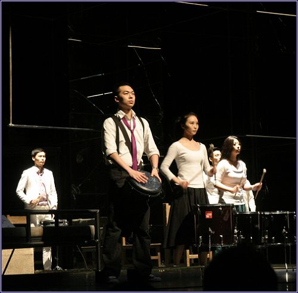
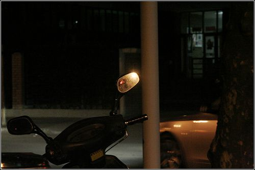
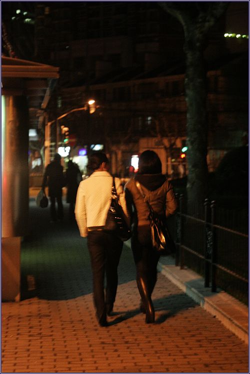
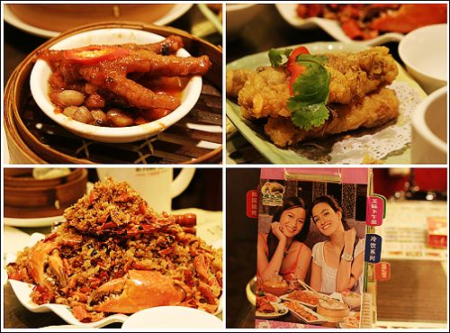

乘火车到达上海已经是下午一点多钟，正好Angie搬家，忙碌了半个下午，两个人才出去吃了点东西算是早午饭。接着去海涛剪发，保守地剪到肩膀。理发师问：“不可惜么？”想想自己的头发长得快，没什么可惜的，剪就剪了吧，越来不在意外表如何，心里琢磨：这难道是要迈入中年的征兆？而我的心里怎可以如此平静？这在以前会象一场地震给我造成的影响啊。对小麦同学的话特有共鸣：以前觉得重要的事情，现在觉得完全不重要；以前觉得不重要的事情，现在觉得很重要……
头发剪了之后看上去精神多了。忙完这一切，打车到上海大剧院，周末这才开始。


《恋爱的犀牛》由中国国家话剧院演出，是廖一梅写的第一部话剧，也是演出次数最多、版本最多的一出戏。廖一梅说：“这是一部任性的作品，是年轻的，荷尔蒙过盛，是燃烧的火焰，不分青红皂白的火焰，直接而坦白，无所谓克制和羞涩。”我想我们都会有这样一段没有逻辑、疯狂而痛苦地不顾一切去爱的经历，“忘掉是一般人能做的唯一的事，但我决定不忘掉她。”显而易见的年轻，丝毫不理会这“不忘掉”引发的巨大痛苦和长时间的困惑，如此决绝。记得有句台词大致是这样的：如果你没有勇气面对真爱，你可以找个伴儿结婚，但是千万别说“爱”。还有句特幽默的台词：拿着菜刀砍电线，一路火花带闪电。
剧院里安静得能听到我吃巧克力豆的声音，恰好我坐在第四排最边上的位置，两位着长大衣的剧院工作人员就站在我旁边，如此危险的条件下，我还是举起相机仓皇地拍了四五张剧照。得到两次警告，警告不要吃东西，不要拍照。尴尬！怎么就沦落到被警告的观众了呢？吃巧克力豆是太饿了，而整个下午都没摸相机的我，又如何能错过演出？大概上一次看话剧欢畅地拍了整场也没有得到一个警告，而这次地下工作没成功。就在水幕从台顶倾泻而下时，场内的闪光灯开始噼里啪啦地亮起来，纳闷，闪光有屁用？拍出来是暗的，单反才是硬道理。在管理员四处制止的混乱中，我又抢拍了两张。
话剧前段进展缓慢，Angie想睡觉了。不过渐渐精彩，过电的感觉数次掠过全身毛孔。如果剧场能唤回你的回忆，呼应那些心底的渴望，剥掉那些让心灵和感官变得麻木的，被生活磨出厚厚的老茧，让你重新感到柔软和冲动，你会知道，生命的本质就是这般无遮无拦的，勇敢的，坚强的，多情的。



散场后的晚上有些冷，饥寒交迫地跑去避风塘吃晚饭。
为了健康要多吃点，再多吃一点。






6 Responses to “天黑，周末这才开始。”
2009-03-15
照片都很柔和
郭涛是不是演过恋爱的犀牛
就是疯狂的石头里那位
2009-03-16
短了发,真的精神很多,连镜头都开始发抖呢
2009-03-16
头发剪的好。我也一直琢磨着把头发剪短。看上去精神很多呢。
2009-03-16
3万一平… 卖一个肾才能买3平
2009-03-16
戴眼镜的文静女～
2009-03-19
我是在剧院旁的克丽斯汀买了面包当晚餐，赶在开场前全部消灭干净。可惜座位不太好拍不太清楚，只能谢幕的时候趁乱站起来猛拍一通。
Leave A Reply
存档只读，评论已关闭。